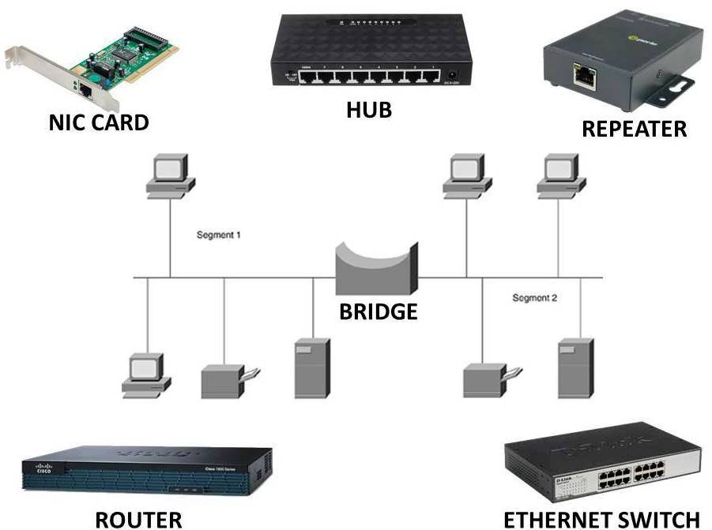

Selamat Datang di TKJ
Membangun generasi teknologi yang unggul dan inovatif.
Pelajari Lebih Lanjut 
Kompetensi Jaringan
Kemampuan membangun dan mengelola jaringan secara profesional.
Manajemen Server
Instalasi dan konfigurasi server untuk berbagai kebutuhan.

Keamanan Jaringan
Melindungi data dan jaringan dari berbagai ancaman cyber.